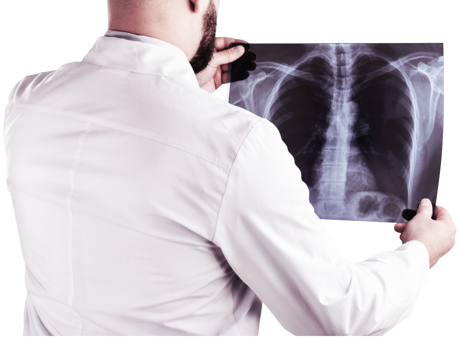

En esta área se desempeñan los técnicos radiólogos, quienes llevan a cabo la preparación del paciente y la toma de imágenes como radiografía, tomografía, resonancia magnética, densitometría ósea, gammagrama y ultrasonido.
Este personal suele tener normas de trabajo bien definidas ya que se encuentran expuestos a radiaciones.
La radiología es la especialidad médica, que se ocupa de generar imágenes del interior del cuerpo mediante diferentes agentes físicos (rayos X, ultrasonidos, campos magnéticos, entre otros) y de utilizar estas imágenes para el diagnóstico y, en menor medida, para el pronóstico y el tratamiento de las enfermedades. También se le denomina genéricamente radiodiagnóstico o diagnóstico por imagen.